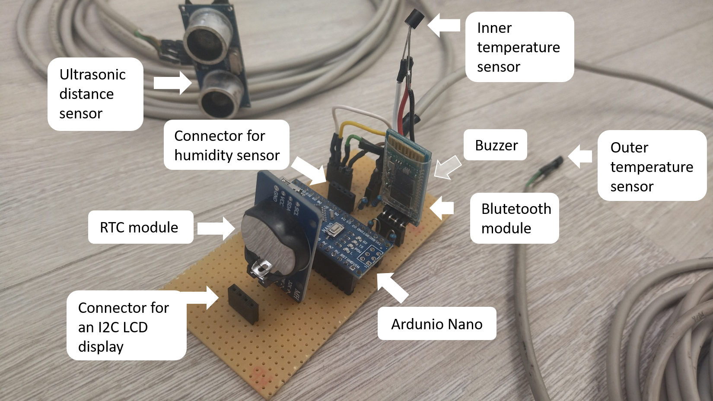
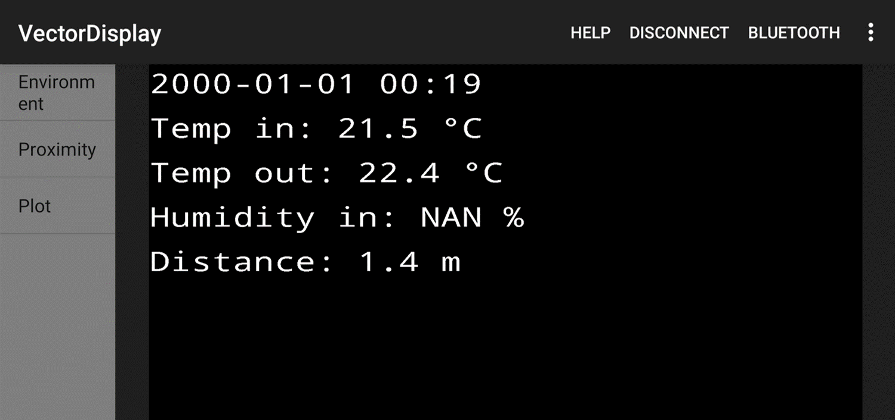

Car Kit
Description
The onboard computer display in my car is not working - that's where the idea came from. I wanted to recreate some of the functionality of this display. The first thing to measure was the temperature: inside the car, the air outside and eventually the temperature under the hood (at that time the car have got problems with cooling). For comfortable travel the relative humidity inside is also an important indicator. The idea of a reversing radar came when I saw that an ultrasonic distance measurement sensor for Arduino actually exists.
The system is based on an Arduino Nano microcontroller. Time is measured by an RTC module. Inner and outer air temperature is measured by DS18B20 sensors, inner relative humidity is measured by a DHT11 sensor. For distance measurement I've used a HC-SR04 ultrasonic sensor. A bluetooth module is used to connect the measurement device to a smartphone. A buzzer is added to signal when the car is too close to an obstruction. I used the VectorDisplay library to create a display on the phone.
Because the distance measurement is not connected with the car being actually in reverse, the program continuously measures the distance behind the car. The other values, however, are only measured and updated once in every minute.
Source
To do
- the program stops when the phone goes to sleep, the data collection stops - why?
- add functions: battery voltage, under-the-hood temperature, tire pressure, etc.